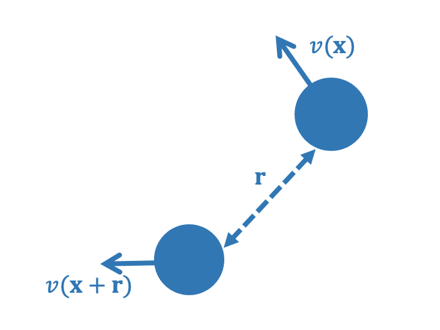
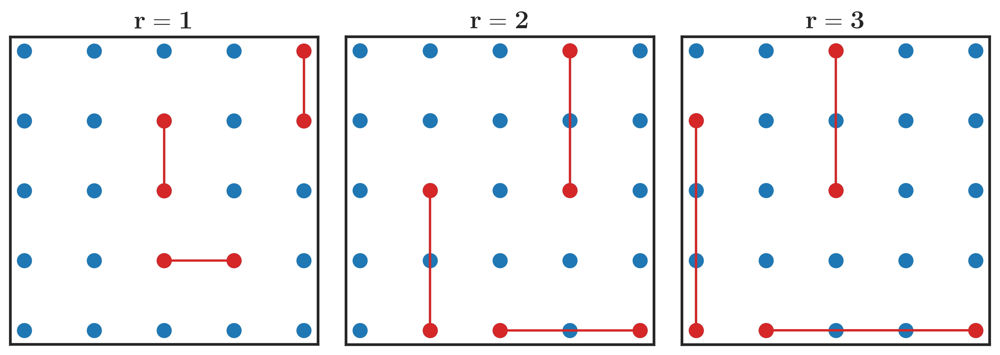

What are structure functions?¶
Structure functions are a set of statistics that use the variance, covariance, and difference between variables in a flow field to estimate inter-scale turbulent fluxes. Fundamental fluid dynamics equations have been used to estimate a relationship between structure functions and these turbulent fluxes. For example, a third-order velocity-based structure function can be used to estimate the rate of energy flux between length scales.
Structure function theory and how to calculate them¶
When a parameter, such as velocity, is measured at many different positions, we can implement a range of statistics to understand these measurements. We can calculate the mean, the variance, the skew, among other properties, which we call moments. Structure functions are these moments, where the \(n\)-th order velocity-based structure function can be written as
where \(v(\mathbf{x})\) is the velocity at position \(\mathbf{x}\) and \(\mathbf{r}\) is the separation vector between two unique data points in the field. The overline represents an average over all possible pairs of data in the flow field that are separated by \(\mathbf{r}\).
To illustrate this concept, consider a pair of moorings in the ocean that are separated by a distance \(r\), as shown in the diagram below.
{kind=link}
Now consider an array of moorings. The structure function is calculated for all pairs of moorings separated by \(r\), and the average is taken over all pairs. The diagram below depicts an array of moorings and highlights mooring pairs with separation vectors of \(r = 1\), \(r = 2\), and \(r = 3\).
{kind=link}
The structure function can be calculated for any order \(n\), but the most common are the second and third order structure functions. For a velocity field, the second-order structure function is related to the energy spectrum of the flow field, while the third-order structure function is related to the energy flux between length scales.
Tip
Structure functions can be calculated for any scalar field, not just velocity. A common scalar field is the temperature field in the ocean, which can be used to estimate the rate of heat flux between length scales. Enstrophy flux can also be estimated from vorticity-based structure functions.
Advective structure functions¶
Advective structure functions were introduced by Pearson et al. (2021) to estimate the rate of energy flux between length scales in anisotropic two-dimensional turbulence. As the name suggests, advective structure functions are based on the advection of fluid properties in the flow field. The advective structure function can be written as
where \(\mathcal{A}_{\mathbf{v}}(\mathbf{x})\) is the advection of velocity at position \(\mathbf{x}\):
and \(\nabla\) is the gradient operator.
These structure functions have a different relationship to turbulent fluxes than traditional structure functions (above), but they can be compared to third-order structure functions.
Derived relationships between various structure functions and turbulent properties¶
As mentioned earlier, fundamental fluid dynamics equations have been used to estimate a relationship between structure functions and turbulent properties. The following table shows the relationships between various velocity-based structure functions and turbulent properties, but the table is not exhaustive. For more information, see the references below.
Structure function |
Downscale energy flux |
Energy spectrum |
Reference |
|---|---|---|---|
\(SF^2_v\) |
N/A |
… |
… |
\(SF^3_v\) |
\(\epsilon = -2 SF^3_v /3\mathbf{r}\) |
N/A |
Lindborg (1999) |
\(ASF_v\) |
\(\epsilon = - ASF_v /2\) |
N/A |
Pearson et al. (2021) |
References¶
Lindborg, E., 1999: Can the atmospheric kinetic energy spectrum be explained by two-dimensional turbulence? Journal of Fluid Mechanics.
Pearson, B. et al., 2021: Advective structure functions in anisotropic two-dimensional turbulence. Journal of Fluid Mechanics.